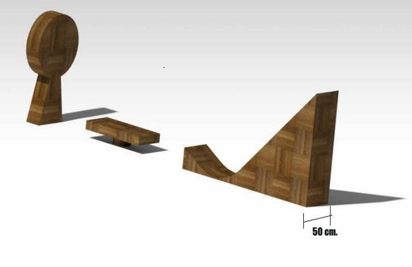
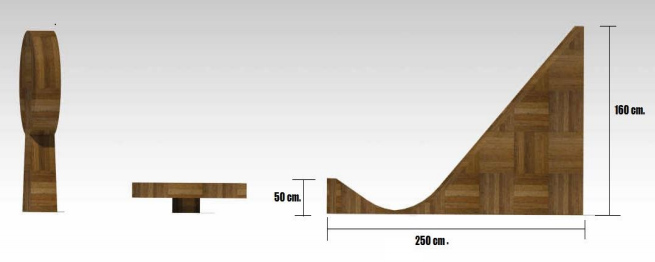

Introduction
From the early ages, wars have been won by simple application of PROJECTILE MOTION. The
war machine BALLISTA, which used a simple principle of projectile to shoot arrows at the enemies,
won number of wars for Roman Empire. Many modern day applications are also based on simple
applications of projectile motion, so for any Engineering Student it is extremely necessary to
understand projectile motion, and working with projectile motion is fun too. Imagine shooting a
target using your own projectile machine! Wouldn't it be fun? If you get excited by just
reading the above lines, this is the event for you. So come and experience the fun yourself.
Problem Statement
To design a machine capable of performing tasks like jumping, projecting balls and
overcoming hurdles.
Gameplay
- Jumping Round (Qualification Round)
- The machine has to descend along a crescent shaped surface and then jump
onto a dandle board.
- The machine should not fall off the dandle board, but if it falls the machine
has to begin from the starting point.
- Maximum number of attempts allowed is 3.
- The participants whose machines are well settled on the dandle board will
be promoted to the next round.
- Shooting Round
- The machine will be initially placed on the dandle board.
- The machine has to shoot the horizontally oscillating dart-board by
projecting a ball which will be situated at a distance of 2.5 metre approx.
- Each machine will be given five chances.
- For every hit team will score points, on the basis of which they will be
qualified for the next round.
Squash balls will be provided by the organisers.
- Hurdle Crossing Round
The qualified teams would be grouped on a random basis, such that each group
consists of three teams (say A, B and C). Team 'A' has to run its machine on the hurdled crescent surface and then the machine has to land onto the ground. Before touching the ground (i.e. when
machine is on the crescent surface or in the air) the machine has to project a ball to the maximum
distance. It must then cross the destination line in minimum time via the specified path. In case the
machine enters a restricted area, points will be deducted and then the machine must continue from
the same point where it had crossed.
Team 'B' and 'C' have to hit the team 'A' machine by projecting balls. On every hit
team 'A' will lose 100 points and the machine which hit the machine of team 'A' gains 200 points.
Team B and C can shoot unlimited balls. Machines of Team B and C would be restricted to move in a
specific area or else the team will lose points. Similar process will be followed for team B and C(while
they try to reach the destination during their chance).
The above procedure will be followed for other groups.
For final result, winners of each group will then be contested.
Machine Specifications
- Machine can be either wired or wireless.
- For wired machine, wire should remain slack under all circumstances during the
competition. So at least 10 m wire should be used
- The machine should be compact in order to efficiently tackle the arena.
Arena


Scoring rules
- Score = (R*5) - (T*5) – {(C +H)*50} –(X*100) + (Y*200).
- R = Range of projectile (in cm.), will be measured from the end point of the crescent shaped
wedge.
- T = Total time (in second) consumed in completing round 3.
- C = no. of times machine moves out from its specified area.
- H = no. of times any team member touches its boat or gives tension in the wire.
- X = No. of times ball hits machine 'A'.
- Y = no. of times machine A hits machines B and C while they attempt to reach the
destination.
Rules and Regulations
Each team can consist of a maximum of 4 members.
The team members can belong to different institutes or colleges.
No two teams can have a common member.
Squash balls will be provided.
Time specification: - For any team setup time of max 15 min. will be given. (Extra 5
minutes will be given for setup connections).
The participating teams are required to bring their own extension cords and/or multipoint
plugs. We will provide power supply of 220V AC, 50 Hz.
The Organizers reserve the right to change any of the above rules as they deem fit.
Change in rules, if any, will be highlighted on the website and notified to the registered
participants.
Tutorials
http://youtu.be/NVODVrya6Fg
http://www.youtube.com/watch?v=CNYdhwm3Zrk
http://www.youtube.com/watch?v=VycJWEzi3dA&feature=related
Event Coordinator
Gaurav Goyal
gauravgoyal@ismu.ac.in
+91 9709185400
Event Organisers
Pulkit Godha
+91 9709015654
Avinash Patel
+91 8051110761
Nimit Agarwal
+91 7277907674
Nitin Bansal
+91 9199452305